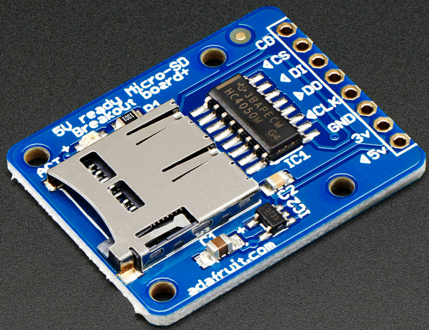
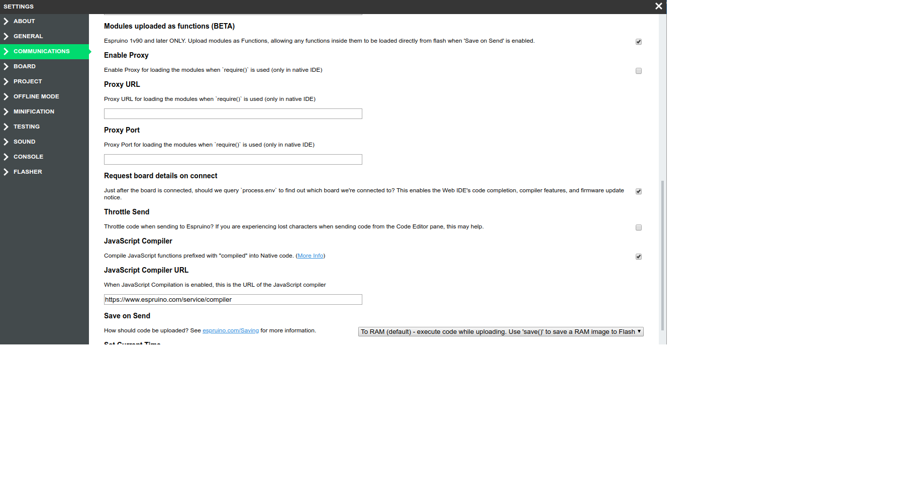
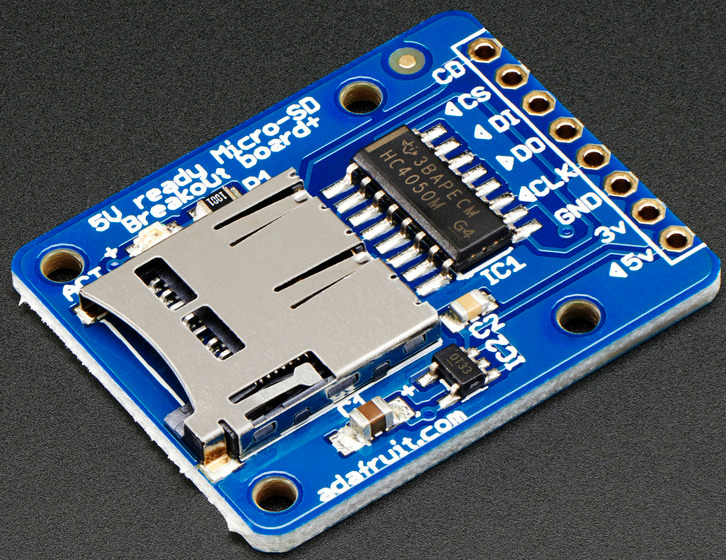

{kind=link}
Method 1: Solder Micro SD adapter to wires

Method 2: Use Micro SD breakout board

Method 3: SD card connector on PCB
(yes but it's SMD)
Method 4: SD card connector on breakout board without additional parts

Sometimes, it helps to close Web IDE, open minicom (keep trying until no longer device busy message) hitreturn a few times. Then close minicom, open Web IDE and try connecting again.
When the project is deployed, we want the code to start when the Espruino is powered on, not needing to start it from within the Web IDE.
In the Web IDE, set the following options:
Modules loaded as Functions
Save on Send Direct to Flash

Supply voltage from one battery directly to Espruino:
| U | P |
| 3.7 V | 0.09 W |
| 4.2 V | 0.12 W |
Supply voltage from batteries through Buck Converter to Espruino:
| U in | U out | P |
| 8.0 V | 3.3 V | 0.15 W |
| 4.0 V | 3.3 V | 0.18 W |
Reset Espruino:
run
reset();
Remove modules from Flash:
run
reset();
save();
Save code in Flash so that it is available after powerup:
run
save();
autostart code on startup:
place call in this function
function onInit() {
..
}
Then issue command
save();
http://forum.espruino.com/conversations/286424/
https://www.espruino.com/File+IO
Method 1: Solder Micro SD adapter to wires
Method 2: Use Micro SD breakout board

Method 3: SD card connector on PCB
(yes but it's SMD)
Method 4: SD card connector on breakout board without additional parts